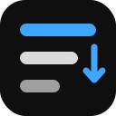

Welcome to Playlist Tools
Reverse, shuffle, sort and save any YouTube playlist — free, private, no login.
Language
How it works
- Open any YouTube playlistThe toolbar appears at the top of the playlist panel, beside the video.
- Pick an orderReverse plays last to first, Shuffle keeps one random order, Sort goes by title, length, channel or watched.
- Build your own listsClick ＋ Add to Playlist under any video to collect it into a local playlist that lives only in your browser.
Keyboard shortcuts
Buttons to show
Untick the ones you never use. You can change this later in the popup's settings.